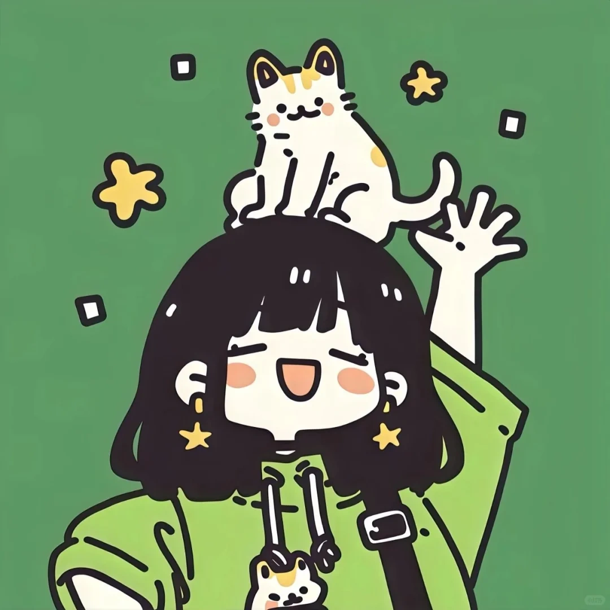

欢迎来到我的个人设计作品集网站。我是一名视觉传达艺术设计（交互方向）创作者，专注于视觉美学表达与用户交互体验的融合探索。我始终相信，好的设计不止是好看的视觉画面，更是有逻辑、有温度、懂用户的交互体验。 这里收纳了我在校期间的全部设计成果：包含UI界面设计、交互原型创作、国潮视觉海报、品牌版式设计、文创视觉衍生等多类作品。每一份创作，都是一次审美沉淀、一次交互逻辑的打磨、一次对设计热爱的表达。 感谢你驻足浏览我的世界，愿我的视觉与交互设计，能带给你不一样的观感与共鸣。